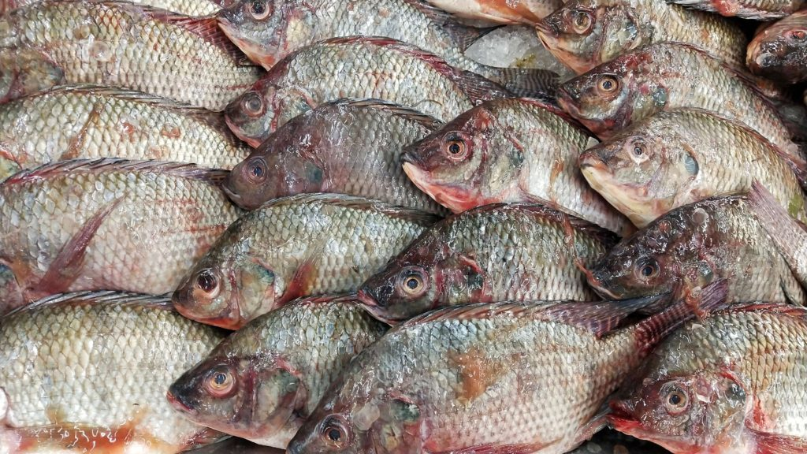
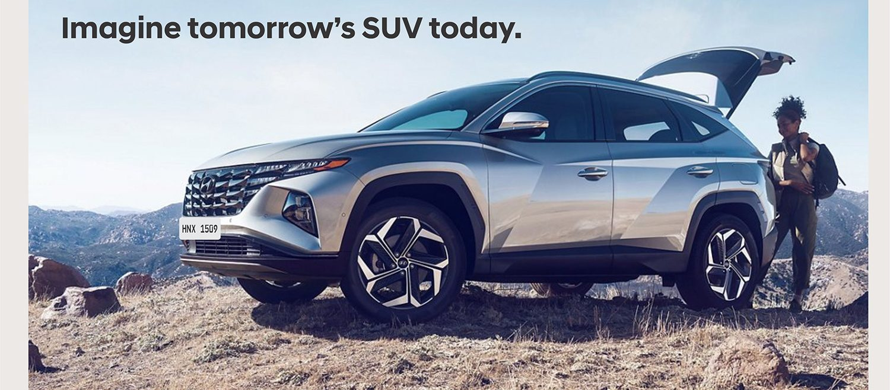
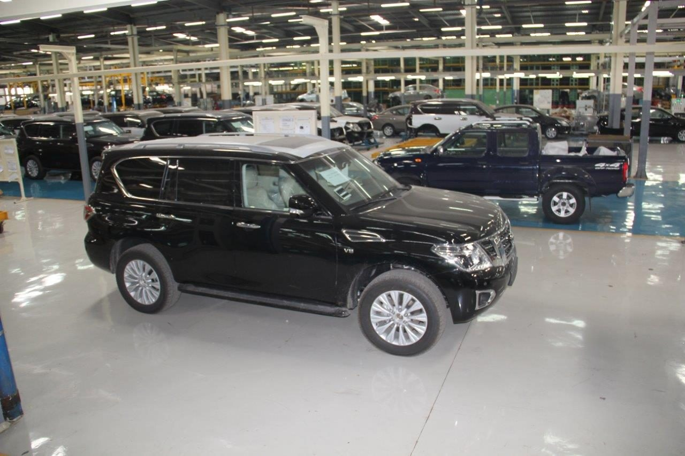
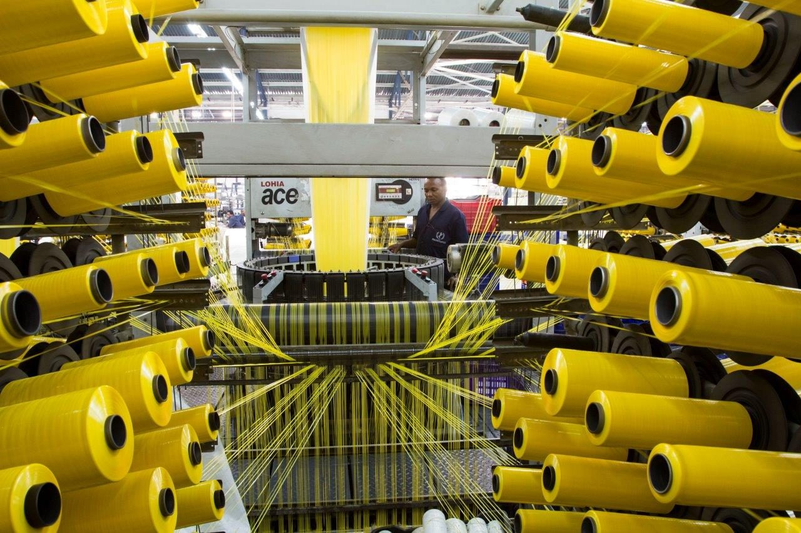
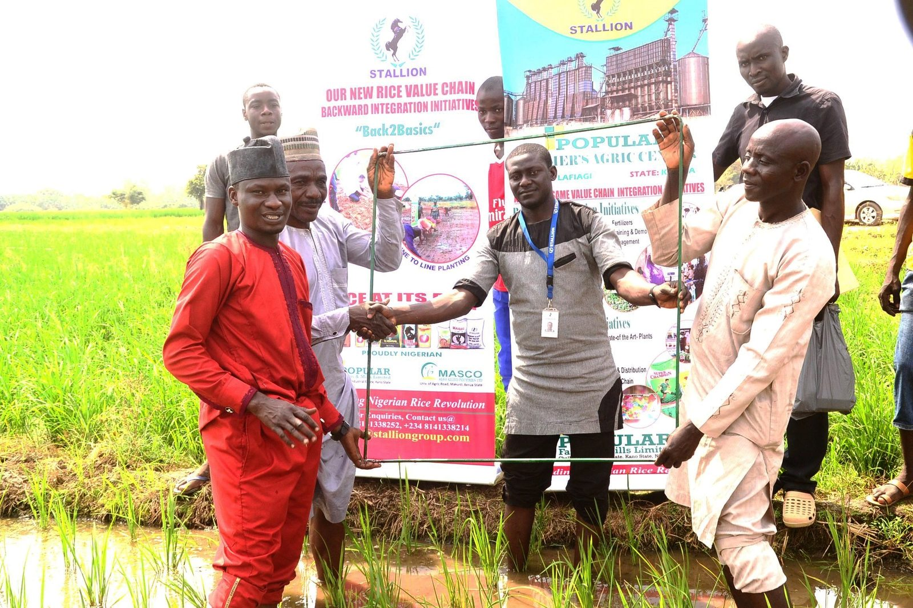

Rice, fish, vehicles, steel and packaging — produced, processed and distributed by one family group for fifty-two years.
Around fifty operating companies, from agriculture and food through to steel, packaging and logistics.

Rice, sesame, seeds and agrochemicals

Aquaculture, processing, frozen fish and cold storage

Exclusive distribution, sales and aftersales

Vehicle and motorcycle manufacturing in Nigeria
Integrated steel production and iron-ore mining

Flexible and polypropylene packaging
Injection and blow moulded consumables
Shipping, clearing, storage and transport

Commodity and consumer goods distribution
Stallion operates every stage between the farm and the market — sourcing, processing, cold storage, transport and distribution — rather than trading a single link in the chain. The same structure runs beneath rice, fish, steel and vehicles.

Founded in 2019 by Sarina Vaswani, SEI works across education, healthcare and youth empowerment — including a fifty-bed hospital in the Aladja region of Delta State and training for 40,000 rice farmers.
Distributors, suppliers, manufacturers, investors and candidates — we will direct your enquiry to the right desk within one business day.